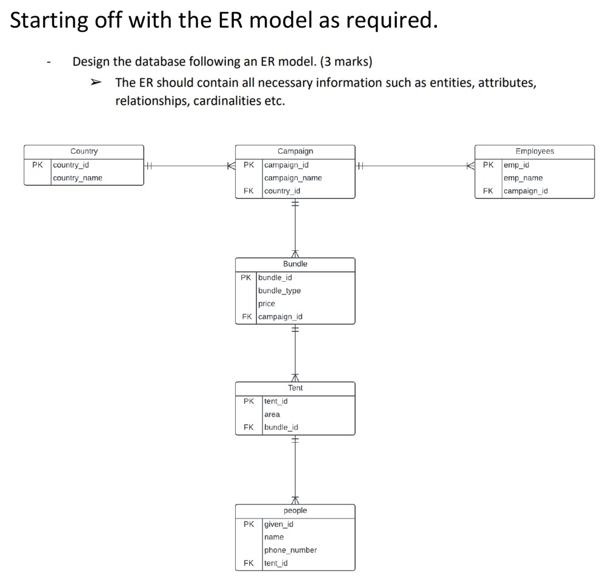
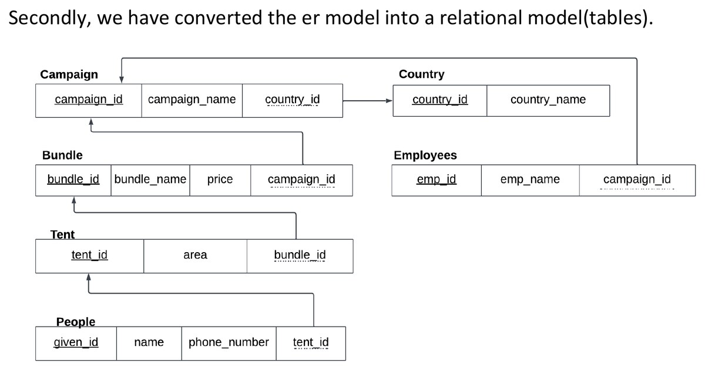

Hajj organisation database
A relational schema for organising Hajj logistics — pilgrims, campaigns, employees, accommodation, and packages across multiple countries of origin. The interesting part of this project happens before any code runs.
Design before implementation
An ER model came first: countries, campaigns, bundles, tents, people, and employees, with attributes kept deliberately minimal.

That model mapped to six related tables with primary and foreign keys — campaigns reference countries, bundles reference campaigns, and the rest hang off that spine. Normalisation analysis found no anomalies to fix, because the design satisfied normal form from the start rather than needing a later pass to correct it.

What got built
The schema was implemented in Oracle SQL and populated with sample data. Four queries exercise different constructs — sorted retrieval, grouped aggregation, a subquery combining an aggregate with a filter, and a join across tables. Two parameterised stored procedures handle an insert into the country table and a price update on the bundle table, demonstrated on a bundle priced at 20,000 becoming 23,000 after a tax update.
Scope
Coursework with sample data — roughly five rows per table, not real operational scale. No application layer, indexing strategy, or performance work sits on top of the schema. The value here is the modelling discipline, not a deployed system.
Built with
Oracle SQL · ER modelling · relational design